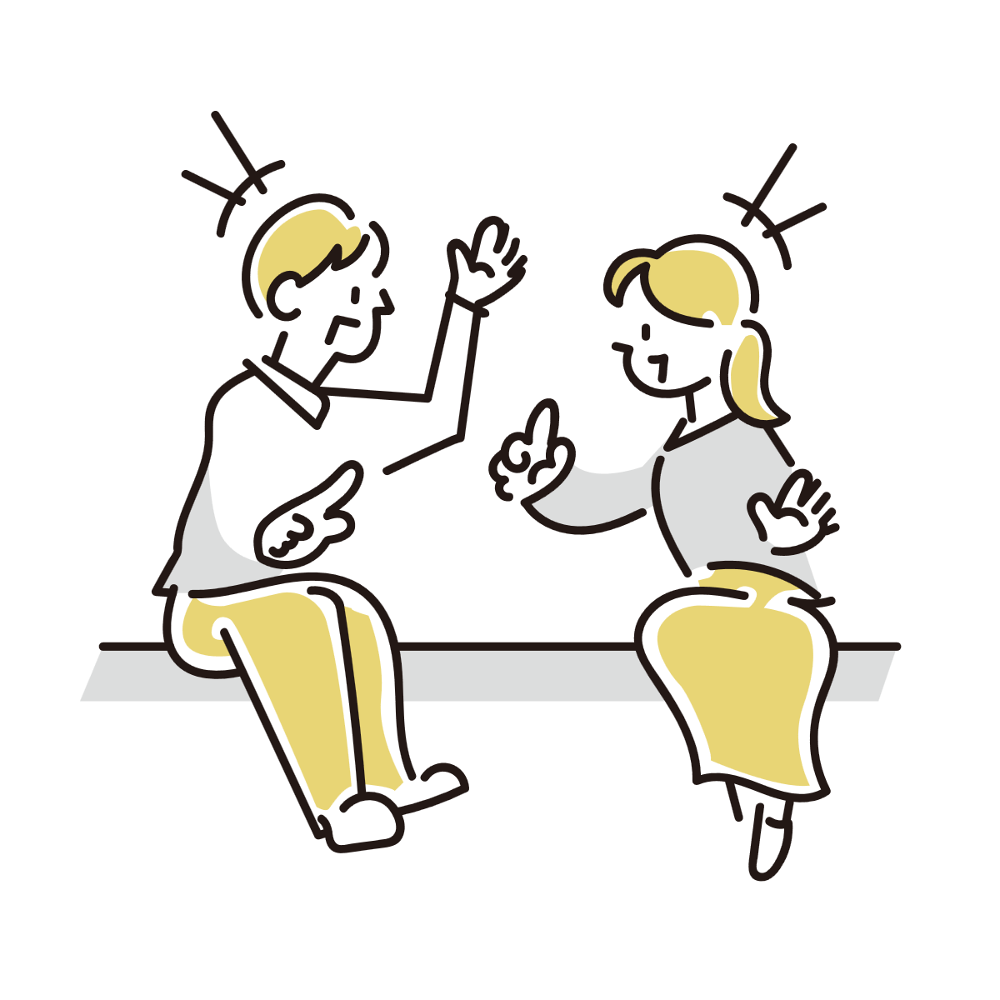
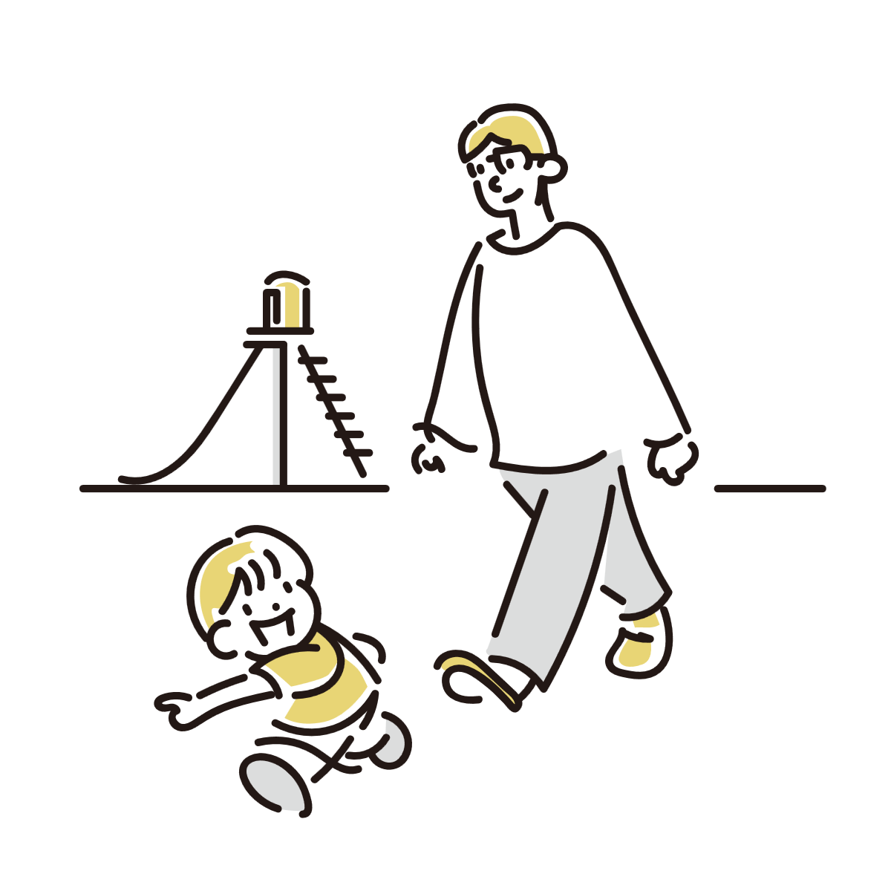
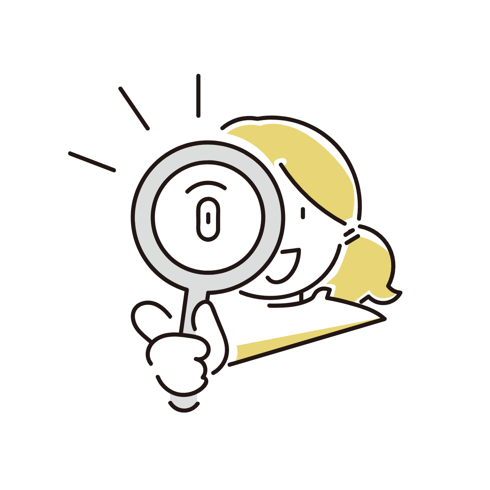

murmur
日常の中でふと気になる、 体や感覚の小さな変化を 静かに整理する読み物サイトです。



このサイトについて
このサイトでは、 日常の中で感じる体の疑問や違和感について、 現在わかっている仕組みをもとに整理しています。
はっきり解明されていないものについては、 仮説段階であることも含めて紹介しています。
日常の中でふと気になる、 体や感覚の小さな変化を 静かに整理する読み物サイトです。



このサイトでは、 日常の中で感じる体の疑問や違和感について、 現在わかっている仕組みをもとに整理しています。
はっきり解明されていないものについては、 仮説段階であることも含めて紹介しています。